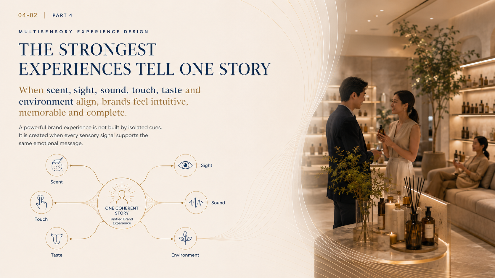
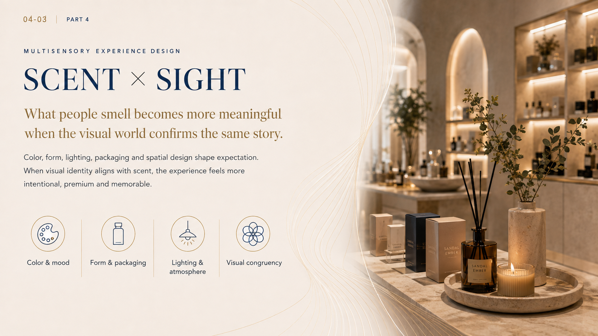
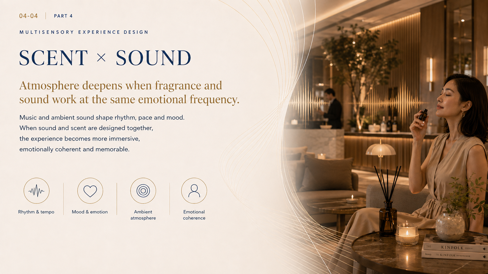
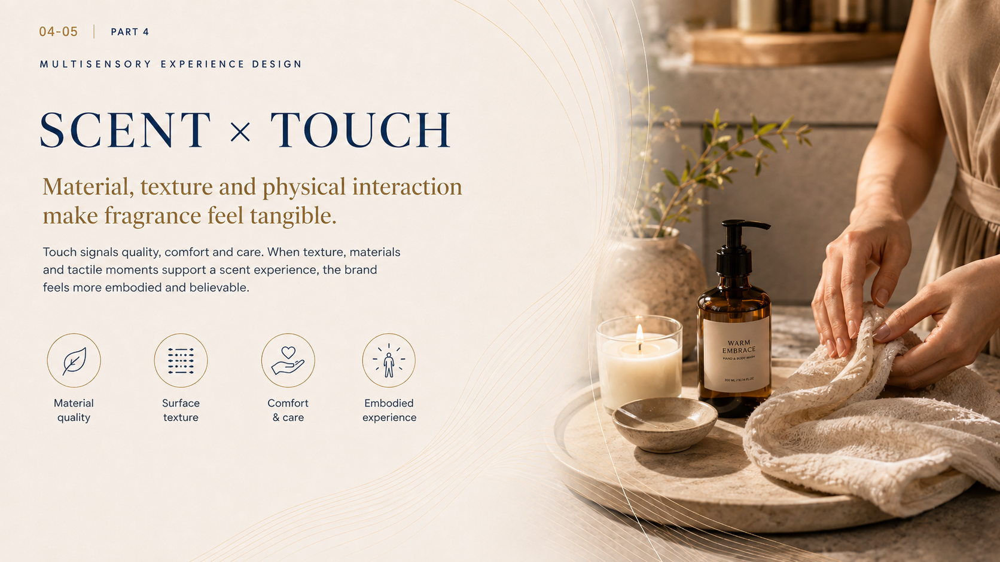
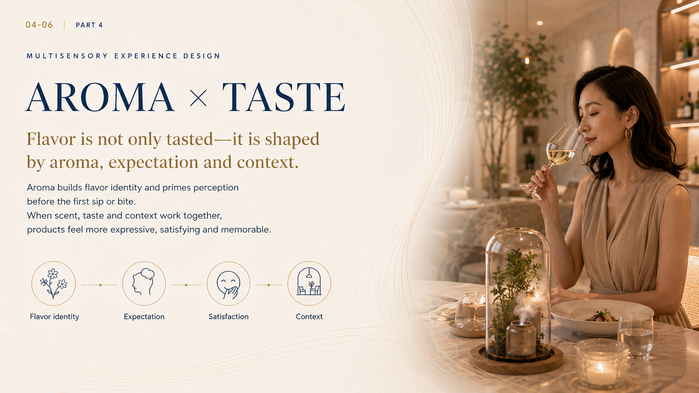
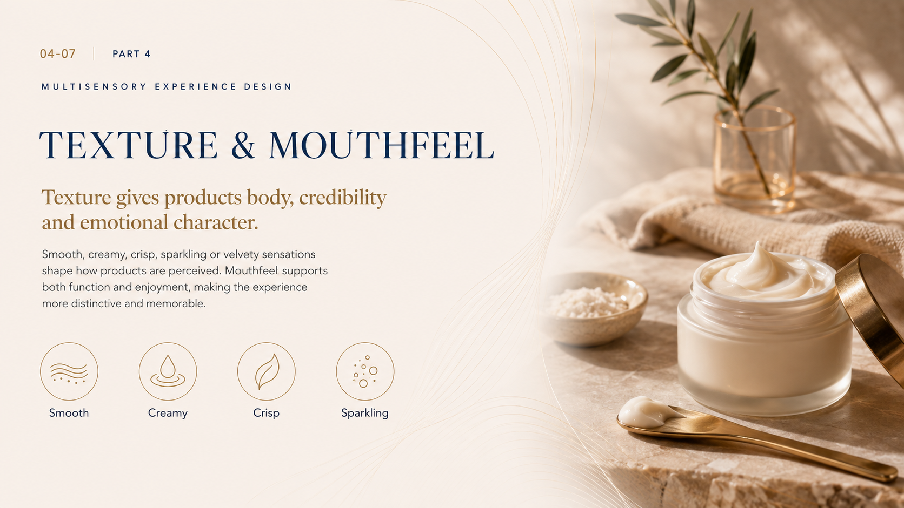
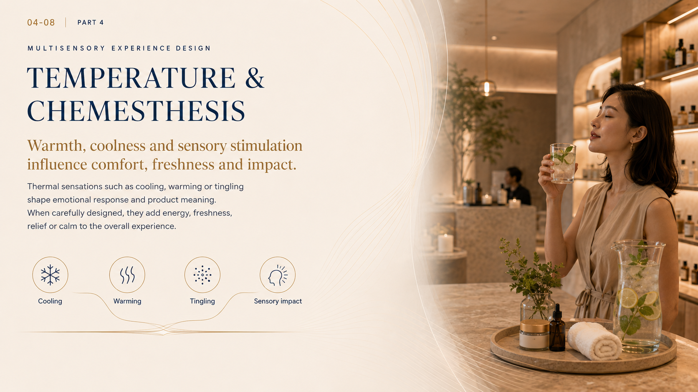

From scent to sensory experience
The strongest experiences tell one story.
When scent, sight, sound, touch, taste and environment align, brands feel intuitive, memorable and complete.
A powerful brand experience is not built by isolated cues. It is created when every sensory signal supports the same emotional message.
- Scent
- Sight
- Sound
- Touch
- Taste
- Environment


Multisensory experience design
Scent × sight
What people smell becomes more meaningful when the visual world confirms the same story.
Color, form, lighting, packaging and spatial design shape expectation. When visual identity aligns with scent, the experience feels more intentional, premium and memorable.
- Color & mood
- Form & packaging
- Lighting & atmosphere
- Visual congruency
Multisensory experience design
Scent × sound
Atmosphere deepens when fragrance and sound work at the same emotional frequency.
Music and ambient sound shape rhythm, pace and mood. When sound and scent are designed together, the experience becomes more immersive, emotionally coherent and memorable.
- Rhythm & tempo
- Mood & emotion
- Ambient atmosphere
- Emotional coherence


Multisensory experience design
Scent × touch
Material, texture and physical interaction make fragrance feel tangible.
Touch signals quality, comfort and care. When texture, materials and tactile moments support a scent experience, the brand feels more embodied and believable.
- Material quality
- Surface texture
- Comfort & care
- Embodied experience
Multisensory experience design
Aroma × taste
Flavor is not only tasted. It is shaped by aroma, expectation and context.
Aroma builds flavor identity and primes perception before the first sip or bite. When scent, taste and context work together, products feel more expressive, satisfying and memorable.
- Flavor identity
- Expectation
- Satisfaction
- Context


Multisensory experience design
Texture & mouthfeel
Texture gives products body, credibility and emotional character.
Smooth, creamy, crisp, sparkling or velvety sensations shape how products are perceived. Mouthfeel supports both function and enjoyment, making the experience more distinctive and memorable.
- Smooth
- Creamy
- Crisp
- Sparkling
Multisensory experience design
Temperature & chemesthesis
Warmth, coolness and sensory stimulation influence comfort, freshness and impact.
Thermal sensations such as cooling, warming or tingling shape emotional response and product meaning. When carefully designed, they add energy, freshness, relief or calm to the overall experience.
- Cooling
- Warming
- Tingling
- Sensory impact
